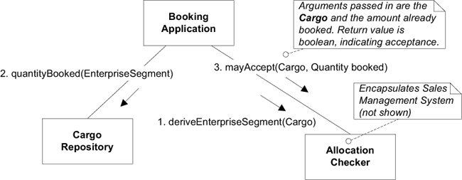

Ch 7: Using the Language: An Extended Example
Cargo Shipping System (貨物運送系統)
我們要替一家貨運公司開發軟體，最初的需求如下:
- 追蹤貨物的處理狀態
- 預約寄送貨物
- 當貨物抵達某個地方時，自動寄送發票給客戶
用來表示 Domain Model 的 class diagram 如下:

透過 Domain Model 我們可能使用以下的描述:
Cargo(貨物) 涉及多個Customer(客戶)，每一個Customer扮演著不同的Role(角色)。Cargo(貨物) 的Goal(目標) 已指定。- 透過一組滿足
Specification(規格) 的Carrier Movement(運輸動作) 將達成Delivery Goal(運送目標)。
圖中的每個物件的意義:
Handling Event(處理事件): 描述對Cargo採取的處理，像是- loading it onto a ship (將貨物裝上船)
- clearing it through customs (將貨物通過海關檢查並獲得許可)
- loading (裝貨)
- unloading (卸貨)
- being claimed by the receiver (被收貨人提走)
Delivery Specification(運送規格): 描述delivery goal(運送目標)，包含了destination(目的地) 與arrival time(抵達時間)。Customer:Role(角色) 區隔了Customer(客戶) 在運送扮演的身份。Role可以是 shipper (託運人), receiver (收貨人), payer (付款人) 等。Customer與Cargo的關係是「qualified (限定的) many-to-one」而非「many-to-many」。
Carrier Movement(運輸行動): 描述Carrier(如，卡車或船) 從一Location(地點) 到另一Location(地點) 的旅程。-
看圖說明

Cargo經過多個Handling Event處理，透過Carrier的Carrier Movement在Location之間移動。
-
Delivery History(運送歷史紀錄): 描述Cargo在運送過程的。
Model 已經涵蓋實作需要的概念。假定我們有適當的機制保存物件與搜尋物件。
Model 的 refinement, design, implementation 是在迭代開發的過程中互相配合、同步進行的。也就是說，Model 不會是完全設計好，然後再交由下一個階段進行實作，而是應隨著開發不斷地發展、改進與調整。
這個範例從一個相對比較成熟的 Model 開始。並且，為了聚焦本章的重點，範例限制 Model 的修改動機必須是「為了使 Model 能與具體的實作相互關聯」，然後使用 building block patterns 進行修改 (即 Entity, Value Object, Aggregation, Repository 等)。
Isolating the Domain: Introducing the Applications
使用 Layered Architecture 將 domain 與其他部分區隔。
以下是三個 application layer 的 class:
- Tracking Query: 查詢
Cargo的處理情況。 - Booking Application: 註冊新的
Cargo讓系統處理。 - Incident Logging Application: 紀錄
Cargo處理的事件。
Application layer 負責向 domain layer 問問題，domain layer 負責回答問題。
區分 Entity 與 Value Object
檢視每一個物件: (判斷方法: 可以共用的物件是 Value Object，不行的是 Entity)
Customer- Entity
- 唯一識別碼: customer ID
Cargo- Entity
- 唯一識別碼: tracking ID
Handling Event與Carrier Movement- Entity
- 唯一識別碼
Carrier Movement: schedule ID (從 shipping schedule 中的 code)Handling Event: Cargo tracking ID + completion time + type
Location- Entity
Delivery History- Entity
- 唯一識別碼: Cargo tracking ID (
Delivery History與Cargo一對一關聯，沒有自己的唯一識別碼。Delivery History的識別碼來自Cargo)
Delivery Specification- Value Object (可以有兩個
Cargo送往相同的地點，因此共用同一個 Specification)
- Value Object (可以有兩個
Role與其他屬性- Value Object
- 其他屬性，包含像是 time, name
關聯
指定關聯方向。圖中說明每個關聯方向的原因。

Carrier Movement - Handling Event- 如果要從
Carrier追蹤貨物，就需要Carrier Movement -> Handling Event，但是我們的業務不需要。 - 業務需要追蹤
Cargo的狀態，需要透過Cargo -> Delivery History -> Handling Event -> Carrier Movement -> Location知道目前Cargo的位址。
- 如果要從
Aggregate Boundaries
Aggregate root 是 Entity 且有自己的唯一識別碼: Customer, Cargo, Carrier Movement, Location
Cargo 的 aggregate 可以把所有因為 Cargo 而存在的事物劃入邊界中，包含 Delivery History, Delivery Specification, Handling Event。
Handling Event 最後被設計成自己為 aggregate，因為業務上有需要查詢 Cargo 處理狀態，需要透過 Handling Event。
Repository
只有 Aggregate root 會有 Repository。

沙盤推演，這些 Repository 是否能滿足需求。
- Booking Application
- 客戶
Customer(Customer Repository) - 預定貨物要運送到
Location(Location Repository)
- 客戶
- Activity Logging Application
- 使用
Carrier Movement Repository查詢要裝貨的Carrier Movement。 - 使用
Cargo Repository紀錄已完成裝貨。
- 使用
沒有 Handling Event Repository，在這次迭代中 Handling Event 是與 Delivery History 關聯產生集合 且 沒有查詢 Handling Event 的需求。
場景演練 (Working Through Scenarios)
經常演練 Scenario，確保 Model 能夠有效的解決問題。
應用程式功能範例: 更改 Cargo 的目的地
Delivery Specification 是 Value Object，最簡單做法是，建立新的 Delivery Specification 並且更新 Cargo 的 Delivery Specification。
應用程式功能範例: 重複業務 (Repeat Business)
允許使用者在 Repository 中找到一個 Cargo 並基於它產生新的 Cargo。
Aggregate 邊界內的物件與屬性，都要小心考慮:
- 應建立新的，空的
Delivery History，舊的歷史不適用在新的Cargo上。 - 應複製
Customer Role的 Map，並且保留 key 與 value 的 reference。也就是，參考到與原Cargo相同的Customer，因為他是屬於 Aggregate 邊界外的 Entity。 - 產生新的
Tracking ID。
複製 Carge Aggregate 並沒有對外部物件產生副作用。
建立物件
Cargo
Cargo 的 constructor
public Cargo(String trackingId) {
this.trackingId = trackingId;
this.deliveryHistory = new DeliveryHistory(this);
this.customerrolers = new HashMap<Role, Customer>();
}
DeliveryHistory與Cargo雙向關聯。CargoAggregate 包含DeliveryHistory，所以Cargo要負責生成DeliveryHistory。
Repeat Business
為了滿足重複業務 (Repeat Business) 的需求，可以使用 Factory。以下提供幾種實作方式:
public Cargo copyPrototype(String newTrackingId)
public Cargo newCargo(Cargo prototype, String newTrackingId)
public Cargo newCargo(Cargo prototype)
回傳的 Cargo 會有新的 trackingId。
以上回傳的 Cargo 都實作
- 空的
DispatchHistory DeliverySpecification為null
Handling Event
建立 Entity 需要把所有 identity 都傳入。
Handling Event 的 identity 是 Cargo 的 tracking ID, Completion Time, Type。
public HandlingEvent(Cargo handled, String eventType, Date completionTime) {
this.handled = handled;
this.completionTime = completionTime;
this.eventType = eventType;
}
對於 Entity，非 identity 的屬性，通常可以之後再設定。
另一種做法，在 HandlingEvent 中，加入 Factory Method 提供必要屬性，建立 HandlingEvent。 以下是建立一個 loading event 的 Factory Method:
public static HandlingEvent newLoading(
Cargo handled, CarrierMovement loadedOnto, Date completionTime
) {
HandlingEvent result = new HandlingEvent(handled, LOADING_EVENT, completionTime);
result.setCarrierMovement(loadedOnto);
return result;
}
DeliveryHistory 與 HandlingEvent 有一個單向關聯。因此，建立 HandlingEvent 時，透過 Cargo 取得 DeliveryHistory，然後將 HandlingEvent 加入其中。
重構: Cargo aggregate 的另一種設計
如前所述，增加 HandlingEvent 必須要更新 DeliveryHistory，使得修改牽扯 Cargo Aggregate。若同時有其他 client 在修改 Cargo，因為競爭狀況，造成 HandlingEvent 建立延遲或者失敗。因此，能夠在不產生競爭況狀況下，增加 HandlingEvent 是重要的需求，我們要考慮另一種設計。
- 在
DeliveryHistory中不使用HandlingEvent的集合，而用 query 替代。
為了讓 DeleryHistory 能夠查詢 HandlingEvent，需要增加 HandlingEvent 的 Repository。此外，Repository 也可以用來最佳化，提供最有效率的查詢方式。
Module
以下是稍微大一點的 Shipping Model。以下物件根據其套用的 Pattern 進行分類:

Module 本身沒有傳達出 domain knowledge。

Module 的名稱應成為團隊語言的一部份。例如：「我們公司替客戶(Customer)送貨(Shipping)，所以能向他們收取費用(Bill)。我們的銷售與行銷人員與客戶(Customer)協商並簽署合約。操作人員負責將貨物運送(Shipping)到指定的目的地。後勤人員負責帳單(Billing)，根據與客戶(Customer)簽約的價格，寄送發票。」
增加功能: Allocation Checking
銷售部門使用其他軟體來管理客戶關係、銷售計劃等。其中一項功能為收益管理(yield management)，可以讓公司根據「貨物類型、出發地、目的地」或「以分類作為輸入的其他因素」來制定不同貨物類型的運送配額。配額構成各類貨物的運送目標，這樣就不會造成「低利潤貨物過多」、「高利潤貨物過少」、「預定量不足 (還有可以運送很多貨物)」、「預定量過載」等。
現在，要將收益管理的功能整合進開發的系統，讓客戶在預約寄送貨物時，可以根據配額 (allocation) 決定是否接受預約。
串接兩個系統
系統與 Sales Management System 連接的介面，會想到以 Sales Management Interface 來命名。
命名成 Allocation Checker 反映它在系統的職責。
加強 Model: Segmenting the Business
Enterprise Segment 是 Value Object。(Analysis Patterns, Fowler 1996)
public class EnterpriseSegment {
private final String region;
private final String productType;
private final String customerCategory;
...
}
EnterpriseSegment 定義了判斷運送量的依據標準，透過 EnterpriseSegment 可以查詢已預約量與配額。例如:
{region=台北, productType=冷凍食品, customerCategory=一般用戶} 配額 50 公斤{region=台北, productType=電子產品, customerCategory=一般用戶} 配額 100 公斤
這個設計的問題:
- 接受或拒絕
Cargo的預約是 Domain 的責任，而非 application layer (即Booking Application) 的責任。 EnterpriseSegment是如何生成的，沒有清楚說明。也就是，Booking Application如何知道Cargo的分類，進而產生EnterpriseSegment。
這兩個設計問題，適合給 Allocation Checker 處理。

- 透過
Cargo取得EnterpriseSegment(Allocation Checker知道Cargo的配額所屬的分類) - 透過
EnterpriseSegment查詢配額 - 透過
Cargo跟已預約的量，檢查訂單是否接收或拒絕。Allocation Checker知道如何從Cargo生成EnterpriseSegment，所以這裡傳入的是Cargo。
EnterpriseSegment 在這裡應該可以理解成 Request Payload，把 request 所需要的最小資料封裝成物件。這樣的做法可以不暴露處理 request 的實作內部，讓 client 的程式碼不容易因為內部結構修改而受影響。